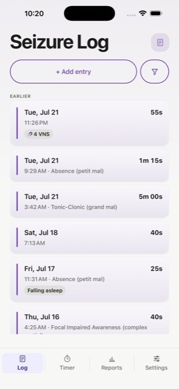
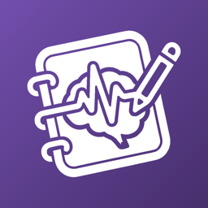
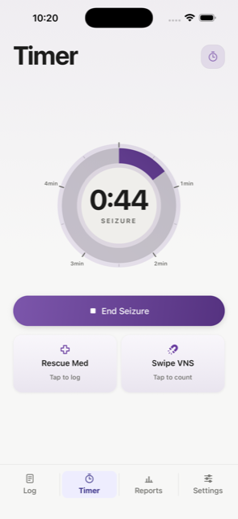
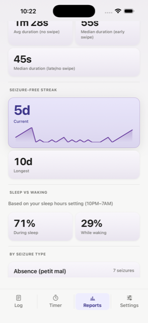
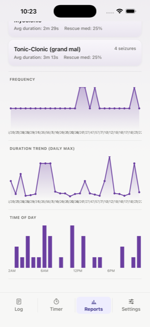
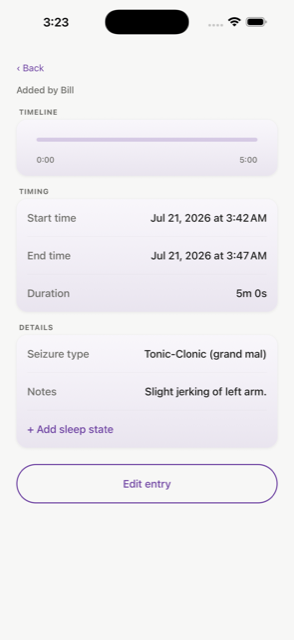
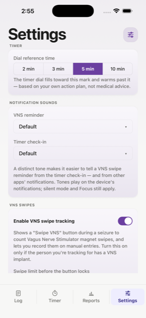

Log every episode
Start and end times, seizure type, rescue medication, VNS swipes, and sleep state, with optional video clips for your neurologist.

Seizure tracking that stays on your phone.
Log seizures, time an episode as it happens, and see patterns over time. Built for people with epilepsy and the caregivers who look after them. Your data stays on your device.

What it does
A calm, single-purpose tool. No accounts to set up, nothing to configure before you can start.

Start and end times, seizure type, rescue medication, VNS swipes, and sleep state, with optional video clips for your neurologist.

Seizure-free streaks, clustering, intervention reliance, and a sleep-versus-waking breakdown. The trends that are hard to feel day to day.

Frequency, duration trends, and time-of-day patterns, laid out so a conversation with the care team starts from real numbers.

Edit & log
Real life is messy. Fix a time, fill in a detail, or log a seizure you missed, whenever you get the chance.
Make it yours
Every family's setup is different, so the settings that matter are yours to adjust. Turn on what you need and leave off what you don't.

Our story
Our child has intractable epilepsy. My wife and I needed a reliable way to keep track of it, something that fit the way we actually live. We're two parents, trading off care, trying to stay on the same page about what happened and when.
We tried the apps that were out there, and they all left gaps. So I built ours around what we actually needed. It's fast to use in the moment. It keeps the two of us in sync. And it turns a pile of entries into something we can read at a glance, and bring to our child's care team as real data instead of a best guess.
I think it's genuinely useful as it stands today, but I'm not finished with it. If there's a feature or capability that would make tracking easier for your family, I'd love to hear about it. My next focus is a companion Apple Watch app, so a caregiver can start and control the timer right from their wrist. It's something my wife and I keep wishing for in the moment, when reaching for a phone isn't always easy.
EpiNotes is free. No ads, no subscriptions, nothing to sell. We built it for our family first. Now we're sharing it with yours, and we hope it helps you the way it's helped us.
Bill
Privacy
Your seizure log lives on your device. There are no accounts, no ads, and no tracking of any kind, and the developer never receives your data. The optional iCloud Sync feature stays within your own Apple account and the caregivers you invite, each of whom needs EpiNotes installed to see it.